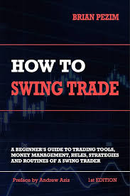

How to Swing Trade
Warren Buffet and basically every financial guru has always said that swing/day trading is not worth it. And it makes sense. The cost of buying and selling stock and paying
taxes would overall outweigh the amount of money you would make from swing trading. However, I have always heard
and actually even met someone who made 300k a year with 1 million dollar of capital. And that guy doesn't even know English!
So I live by a philosophy. Always be open minded and listen, but come to your own conclusions. And so my interest was piqued and I was
interested in what swing trading was. I decided to dive in just to learn something I haven't learned before.
Overall this book was very intresting and directly to the point. No BS. No touchy feelings. Tells you straight up, that this is what you need
these are the techniques you need. And this is how you get started.
I would recommend this book as it's a super short read and I've just started my day trading "journey" even though I haven't made a
single cent yet. We'll see what happens.